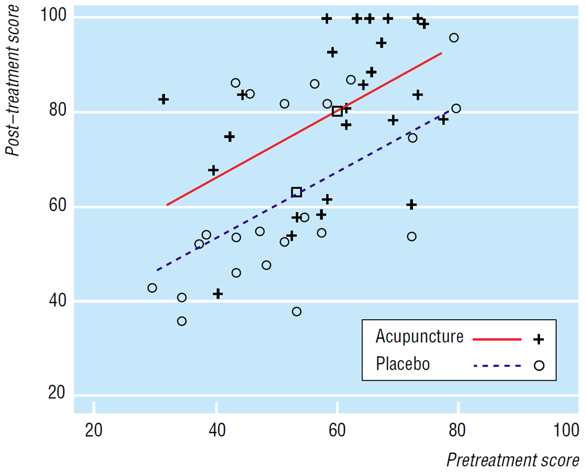
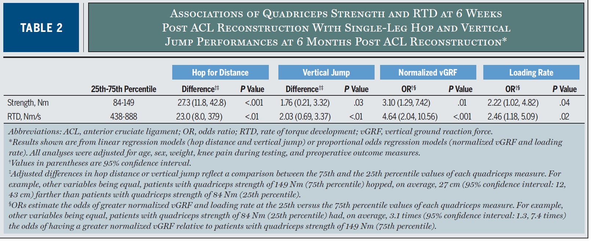
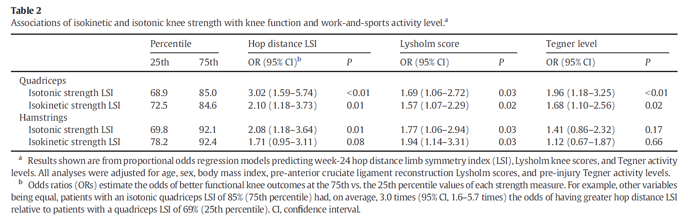

Regression
regression
odds ratio
beta
Regression analysis is a statistical method that describes the relationship between a given predictor and outcome. In the case of multivariable regression, it describes that relationship after “controlling” for other variables. At the end of the session, you should be able to interpret the results from simple or multivariable regression (linear or logistic) analyses.
Definitions
linear regression model: This is also called ordinary least squares (OLS) and refers to regression for a continuous dependent variable, and usually to the case where the residuals are assumed to be Gaussian.
multivariable model: A model relating multiple predictor variables (risk factors, treatments, etc.) to a single response or dependent variable.
multivariate model: A model that simultaneously predicts more than one dependent variable, e.g. a model to predict systolic and diastolic blood pressure or a model to predict systolic blood pressure 5 min. and 60 min. after drug administration.
Regression Model
The choice of regression model depends on the nature of the outcome or dependent variable.
Continuous outcome: linear regression model
Binary outcome: binary logistic regression model
Ordinal outcome: ordinal regression model
Time to event outcome: Cox proportional hazards model1
1 Not covered in this workshop
Regression models are used for
hypothesis testing
estimation (with confounder adjustment to get adjusted estimates of effects)
prediction
flowchart LR A[Goal of <br>Analysis] --> test[Hypothesis testing] & I[Interpretation<br>Effects Estimation] & Pred[Prediction] Pred --> V[Validation] I --> festimat[Point and interval<br>estimation of <br>predictor's effect] test --> ftest[Formal tests]
Modified from Prof Harrell’s rmsc book
Notation
\(E(y|x) = \alpha + \beta x\) (simple regression)
\(E(y|x) = \alpha + \beta_1x_1 + \beta_2x_2\) (multiple regression)
\(y\): Response, dependent, or outcome variable
\(x\): Predictor or independent variable
\(E(y|x)\) : Expected value of \(y\) conditioned on the value of \(x\)
\(\beta\): Slope of \(y\) on \(x\) (\(\frac{\Delta{y}}{\Delta{x}}\))
Watch this video which explains the notation of simple linear regression
Interpretating \(x\)
Generally speaking, \(x\) is the predictor or independent variable - a variable that is associated with the outcome (\(y\))
Depending on the study design, \(x\) can also represent the explanatory variable, risk factor, confounder, covariate, or covariable. With multiple \(x\)’s, they can be (i) multiple risk factors, (ii) treatment variable plus baseline outcomes plus patient descriptors (age, gender), or (iii) different levels of a nominal (categorical) variable (e.g., race)
Interpretating \(\beta\)
slope
regression coefficient
effect size of a given predictor
effect of increasing \(x\) by one unit on the change in the mean of \(y\), holding all other \(x\)’s constant
with multiple \(x\)’s, the \(\beta\)s represent the partial effects of \(x\)s
\(E(y|x) = \alpha + \beta_1x_1 + \beta_2x_2 + \beta_3x_3\)
\(\beta_1\) interpretation: Holding \(x_2\) and \(x_3\) constant, how much does mean \(y\) change when \(x_1\) changes by 1 unit?
\(\beta_2\) interpretation: Holding \(x_1\) and \(x_3\) constant, how much does mean \(y\) change when \(x_2\) changes by 1 unit?
\(\beta_3\) interpretation: Holding \(x_1\) and \(x_2\) constant, how much does mean \(y\) change when \(x_3\) changes by 1 unit?
IQR-\(\beta\) = change in the mean of \(y\) per one IQR increase in \(x\)
Watch this video which explains the interpretation of \(\beta\) from a simple linear regression model. Please note that \(\beta_0\) in the video refers to \(\alpha\) using our notation.
Watch this video which explains the interpretation of \(\beta\) from a multivariable linear regression model. Please note that \(\beta_0\) in the video refers to \(\alpha\) using our notation. To jump straight into \(\beta\) interpretation, start from minute \(14\) of the video.
Logistic regression = exponentiating \(\beta\) = Odds Ratio
Cox proportional hazards regression = exponentiating \(\beta\) = Hazard Ratio (HR)
Linear Regression
Example 1
Expected post-Rx disability = \(24\) + \(0.71\times\)baseline score + \(12.7\times\)acupuncture
- Interpretation: 12.7 represents the difference between groups on mean change scores. Outcome score improved by an estimated 12.7 points more on average in the acupuncture group than in the placebo group.
- An analysis of covariance (ANCOVA) adjusts each patient’s follow up score for his or her baseline score(Vickers and Altman 2001)
- ANCOVA: Analysis of covariance is just multiple regression (i.e., a linear model ) where one variable is of major interest and is categorical (e.g., treatment group). In classic ANCOVA there is a treatment variable and a continuous covariate used to reduce unexplained variation in the dependent variable, thereby increasing power.
Example 2
Table 2, taken from our JoSPT paper(Pua et al. 2017), describes how to interpret the output from a linear and (ordinal) logistic regression model.
| Number | Question |
|---|---|
| 1 | What is the study aim? |
| 2 | What are the predictor(s)-of-interest and outcomes? |
| 3 | What are the confounders - and why? |
| 4 | Why did the authors use both linear and ordinal regression analyses? |

Example 32
2 Bonus Example. Don’t freak out if you don’t understand this
2 Bonus Example. Don’t freak out if you don’t understand this
Independent t-test is a special cases of simple linear regression
\(E(y|x) = \alpha + \beta x\)
\(x\): Single binary predictor
\(\beta\): the slope of a binary predictor (\(x\)) is equivalent to the difference in mean \(y\) between 2 groups
When you replace the binary predictor (\(x\)) by a multi-group/categorical predictor, linear regression and multi-group ANOVA are identical. Hence, multi-group ANOVA is a special case of linear regression
Logistic Regression
The Challenge
Logistic regression is a regression technique that is used to analyse binary outcome.
Our response/outcome variable takes on 2 values, 0 or 1, and we convert them into the probability of a “one” response, given a set of predictors.
We cannot use linear regression to predict probabilities because it may predict probabilities >1 or <0
The Workaround
For the curious who wants to know why the exponentiated \(\beta\) is an OR. But don’t freak out if you don’t understand this!
\[ \begin{array}{ccc} \text{Probabilty } &=&\pi \in [0,1] \\ \text{Odds} &=& \frac{\text{prob}}{1 - \text{prob}} &=& \frac {\pi}{(1-\pi)} \in [0, +\infty) \\ \text{log (odds)} &=& \text{log}\left(\frac{\text{prob}}{1 - \text{prob}}\right) &=& \text{log}\left(\frac {\pi}{(1-\pi)}\right) \in [-\infty, +\infty) \\ \log(\text{odds}) &=& \log\left(\frac{\pi}{1-\pi}\right) &=& \beta_0 + \beta_1 X_1 + \cdots + \beta_p X_p \\ \beta_1 &=& \log(\text{odds}_{x+1}) - \log(\text{odds}_x) \\ e^{\beta_1} &=& \frac{\text{odds}_{x+1}}{\text{odds}_x} &=& \text{odds ratio [OR]} \end{array} \]
Interpreting \(\beta\)
Focusing on the simple logistic regression model (1 predictor) \[ \log{\left( \frac{prob}{1-prob} \right)} = \beta_0 + \beta_1 X \\ \]
The left-hand side of the logistic regression equation \(\text{log}\left(\frac{\text{prob}}{1 - \text{prob}}\right)\) is the natural logarithm of the odds, also known as the “log-odds” or “logit”
What is similar?
- Recall that in linear regression, \(\beta\) is the difference in the outcome associated with a 1-unit difference in the predictor (X)
- Similarly, in logistic regression, \(\beta\) is the difference in the log-odds of the outcome associated with a 1-unit difference in the predictor (X)
\[ \begin{array}{ccc} \beta_1 &=& Y_{x+1} - Y_x ~~~~~~~~~~~~~~~~~~~~~~~~~~~~~~~~\text{linear regression}\\ \beta_1 &=& \log(\text{odds}_{x+1}) - \log(\text{odds}_x) ~~~~~~~~\text{logistic regression}\\ \end{array} \]
What is different and potentially confusing?
- Because the logistic regression model is on the logged scale, when X is a continuous predictor, \(\beta\) is the log of the odds ratio comparing individuals who differ in that predictor by one unit
- Because the logistic regression model is on the logged scale, when X is a categorical predictor, \(\beta\) is the log of the odds ratio comparing individuals at a given categorical level of the predictor to those at the reference level.
- Because \(\beta\) is the log of the odds ratio, we exponentiate \(\beta\) to compute an odds ratio (OR) for X
\[ \begin{array}{ccc} \beta_1 &=& \log(\text{odds}_{x+1}) - \log(\text{odds}_x) &=& \log{\left(\frac{\text{odds}_{x+1}}{\text{odds}_x}\right)} &=& \log(OR) \\ e^{\beta_1} &=& \frac{\text{odds}_{x+1}}{\text{odds}_x} &=& \text{odds ratio [OR]} \end{array} \]
Odds
Odds = Probability that an event or outcome will occur divided by the probability that it will not occur
If there probability of disability is 75% (\(\frac{3}{4}\)), the odds of disability is \(\frac{3/4}{1-3/4} = 3\)
If the odds of disability is 3, the probability of disability is \(\frac{3}{1 + 3} = 0.75 \text{ or } 75\%\)
\[ \begin{array}{ccc} \text{Odds = } \frac{\text{prob}}{1 - \text{prob}} \\ \text{Prob = } \frac{\text{odds}}{1 + \text{odds}} \\ \end{array} \]
Odds Ratio
Because OR is a ratio of odds of the outcome
An OR of 1 implies no association between the predictor and the outcome.
An OR > 1 implies a positive association between the predictor and the outcome.
An OR < 1 implies a negative association between the predictor and the outcome.
Example
If patients with knee pain have an odds of disability of 2.0 and patients without knee pain have an odds of disability of 0.5, then the OR associated with the presence of knee pain would be \(\frac{2.0}{0.5}\) = 4
Patients with knee pain have 4 times the odds of disability compared with patients without knee pain.
When we reverse the order of the groups being compared, the OR will be inverted. So, patients without knee pain have \(\frac{1}{4}\) or 0.25 times the odds of disability compared with patients with knee pain
Note: Odds is the ratio of probabilities whilst Odds Ratio is the ratio of the odds. Watch the first 5 minutes of this video
Example 1
Table 2, taken from our Knee paper(Pua et al. 2017), describes how to interpret the output from an ordinal logistic regression model.
| Number | Question |
|---|---|
| 1 | What is the study aim? |
| 2 | What are the predictor(s)-of-interest and outcomes? |
| 3 | What are the confounders - and why? |
| 4 | Why did the authors use both linear and ordinal regression analyses? |

Example 2
Consider Assoc Prof. Shamala Thilarajah’s PTJ paper
| Number | Question |
|---|---|
| 1 | Table 1: Based on the median, IQR, mean, and SD, What can you conclude about the distributions of the variables? |
| 2 | Table 2: Interpret all the statistics |
| 3 | Table 3: Interpret all the statistics |
| 4 | Table 3: Why did the authors use both linear and ordinal regression analyses? |
For the Eager
Ewen Harrison, consultant surgeon and data-scientist, has a nice online chapter on linear regression for healthcare professionals
Our team has also gone Bayesian in our analyses. See here, here, and here for examples.
References
Pua, Yong-Hao, Benjamin F Mentiplay, Ross A Clark, and Jia-Ying Ho. 2017. “Associations Among Quadriceps Strength and Rate of Torque Development 6 Weeks Post Anterior Cruciate Ligament Reconstruction and Future Hop and Vertical Jump Performance: A Prospective Cohort Study.” The Journal of Orthopaedic & Sports Physical Therapy 47 (11): 845–52. https://doi.org/10.2519/jospt.2017.7133.
Vickers, Andrew J, and Douglas G Altman. 2001. “Analysing Controlled Trials with Baseline and Follow up Measurements.” BMJ 323 (7321): 1123–24.